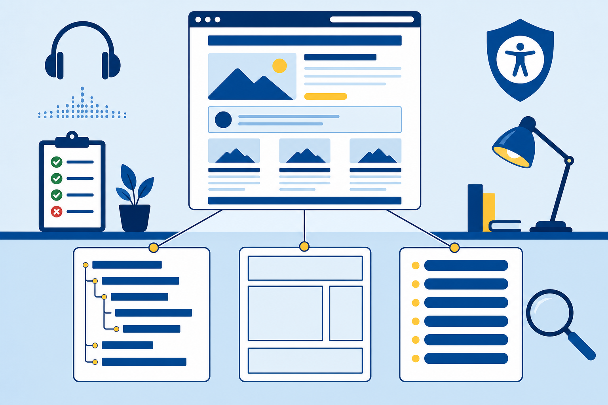
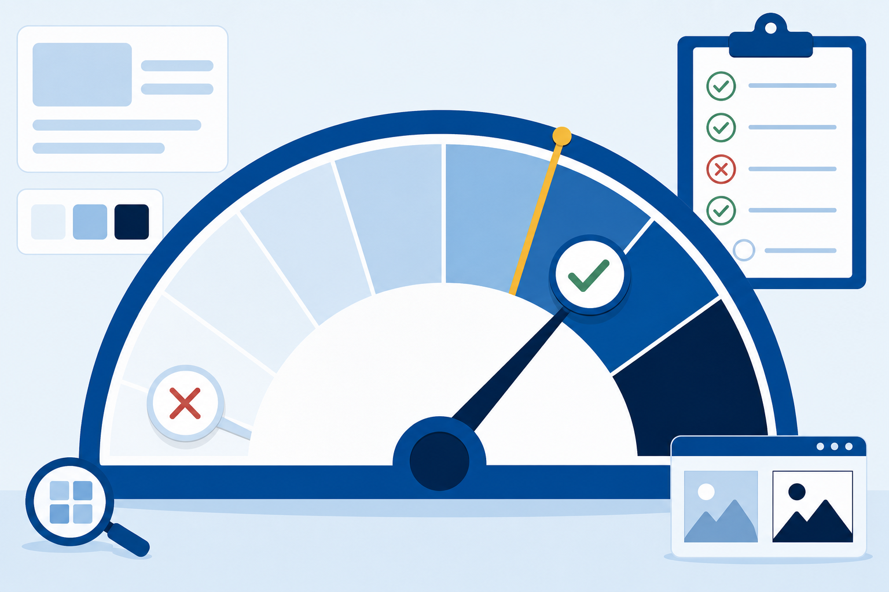
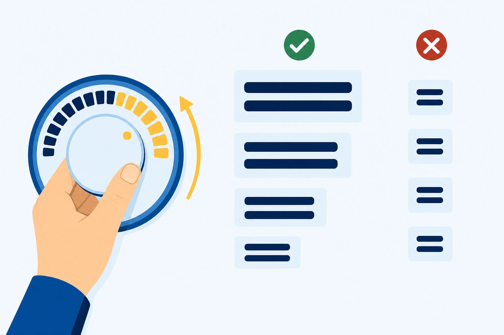

Structure
Ordered headings, landmarks, honest links, visible focus.
The flyer was loud, cheerful, and closed to one of the club's own members.
Ordered headings, landmarks, honest links, visible focus.
AA contrast, color-independent meaning, rem type, honest alt.
Evaluate against Level AA with tools and human checks.
PPerceivable · content reaches every sense
OOperable · every control, every input
UUnderstandable · labels predict, pages behave
RRobust · markup any tool can parse
:focus styleAbsence locks visitors out entirely
Adds contrast minimums and resizable text
Rarely promised, even by the devoted
AA test you can run today: the page must survive 200% zoom. Chapter 8 already prepared you.

<!-- BROKEN: the outline skips a level -->
<h1>Campus Tutoring Center</h1>
<h2>Math Help</h2>
<h4>Drop-in Hours</h4><!-- REPAIRED: each step down is one level -->
<h1>Campus Tutoring Center</h1>
<h2>Math Help</h2>
<h3>Drop-in Hours</h3>Want the smaller size? Keep the level. Set the size in the stylesheet.
<header>announced as the page's banner
<nav>announces its link count before reading one
<main>one keystroke skips the repeated regions
<footer>announced as content info, where fine print lives
<!-- Heard in the links menu: -->
Click here
here
this page<!-- Each names its destination: -->
See the current tutoring schedule
Browse the subjects we cover
Read our exam-week study tipsChapter 3's law, Chapter 7's label test, one WCAG rule. Same demand, every link.
/* BROKEN: keyboard visitors go blind */
.study-links a {
outline: none;
}/* REPAIRED: replace the signal, never delete it */
.study-links a:focus {
outline: 3px solid #268080;
}Reachable · sensible order · visible at every stop. Under one minute, no installs.
Describe: what Devon's heading list shows at the fourth heading, and write the repair.
<h3>, and set any size in the stylesheet
4.85 : 1the footer fix · past the AA bar
4.5 : 1AA body text · 3 : 1 for large type
1.26 : 1the old link wart · invisible ink
Call it: does the pairing pass for body text? For large text?
<!-- BROKEN: the red is the only signal -->
<p>Sessions shown in red are full.</p>
<li class="session-full">Algebra, Tuesday 3:00</li><!-- REPAIRED: the label carries it, the red decorates -->
<li class="session-full">Algebra, Tuesday 3:00 (full)</li>The repair removes nothing. In-sentence links keep their underline for the same reason.
body {
font-size: 1rem; /* was 16px: 16 / 16 */
}
.center-heading {
font-size: 1.5rem; /* was 24px: 24 / 16 */
}
Show the math, and name whose setting the converted value respects.
Describe what matters, about a sentence
alt="", empty on purpose, tools skip it
Name the destination, never the picture
Deliver the finding, caption beside it
The job belongs to the page, not the file. No alt decision survives a copy and paste unexamined.
Blockerslock visitors out: missing alt, a walk that cannot finish, failing body contrast
Polishdegrades the visit: a wordy decorative alt, a label that could read better
Repair blockers first, and defend the order out loud. A stakeholder will ask.
Log all findings before the first fix.
Headings, links, and focus repaired.
Contrast, color, rem, and honest alt.
WAVE, seven checks, validators to zero.
Estimated time: 4-5 hours · Submit skills-lab-9a-lastname.zip · Closes the Part III milestone
Four principles, each with an owned technique.
4.5 to 1 for body, 3 to 1 for large text.
px freezes. rem respects the visitor.
Tools catch absence. Humans judge honesty.
Exit ticket: WAVE comes back clean on a page. Name one thing that proves, and one thing it cannot.
Next: Part IV builds the promised pages. Tables arrive accessible from row one.